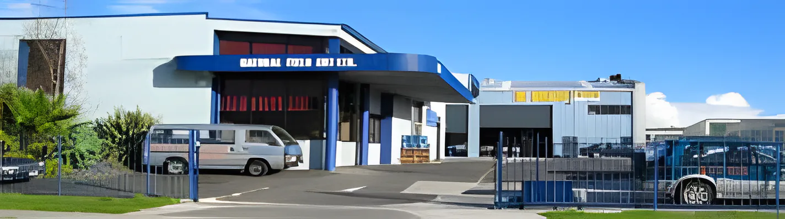

Family runsince 1989
Natural Field is a family business, owned and operated in Auckland since 1989. Over 30 years we've grown steadily, extending our range throughout the North and South Island and out to the Pacific Islands.
12 Nandina Avenue, East Tamaki 09 272 9048
The warehouse
An MPI ATF approved transitional facility, so shipping containers come straight to us and are unloaded on site.

- Transitional facilityWe can safely receive shipping containers and unload goods directly to site.
- MAF accredited personsCertified and experienced in handling goods in a clean and efficient manner.
- Freezers and chillersFreezer and chiller units for our chilled and frozen ranges.
- Warehousing and stock on handWarehousing space, with stock on hand.
Who stocks our products
Over 500 active stockists and food catering services nationwide. By region:

And across the water
Our reach stretches to the Pacific Islands, including Rarotonga, Niue and the Cook Islands. Our clientele are wholesalers, distributors, retailers, caterers and restaurant owners.
Our sister company E-PACS is set up for retail customers.
Want to stock our range?
Tell us what you sell and where. We'll send the details for opening a trade account.